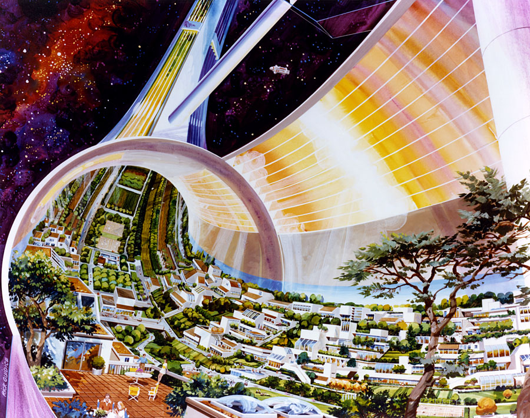
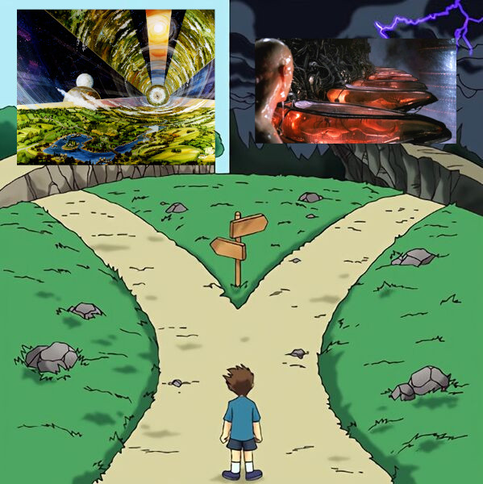

March 17, 2026
George Hotz's musings on running 69 agents1 reminded me that we at the "always has been" moment with AI. 🌎 👨🚀🔫👨🚀
George points out that, "AI is not a magical game changer, it's simply the continuation of the exponential of progress we have been on for a long time," and "it's not magic, it's search."
He's right and it reminded me of back when search became a thing on the internet around 1995. It was an insane unlock to be able to find and retrieve any information you wanted without having to physically obtain it.
Fast forward to today and we see a similar pattern with AI. As a developer, before AI, you had to do a ton of manual searching to figuare out how to build something. Now, agents do that work for you, but it's no different than the search used to be, it's just much more efficient and accurate.
So George is right, AI is not a magical game changer, it's simply the continuation of the exponential of progress we have been on for a long time, it's not magic, it's search.
Kevin Kelly notes that a good futurist focuses on the 3 time phases: past, present, future2.
We covered the past and present, so what about the future?
Having grown up in one of the most aesthetic eras of all time, I am a frequent enjoyer of nostalgia. What if we could harness the power of nostalgia to shape the future? Something like inverting nostalgia so that we long for the future instead of the past.
It didn't seem like there was a term for this, so I call it "yestalgia," (opposite of "no"-stalgia) and it is supported (in theory) by Rupert Sheldrake's research on the retrocausal nature of the mind2.
The first thing to come to mind when trying to envision this was the Space Colony Art from the 1970s3.

This seemed promising, but I wasn't able to articulate my thoughts clearly, so I asked Gemini for help exploring the idea in more detail.
Shared Reverence and Visual Archetypes
For yestalgia to mirror the "shared reverence" of nostalgia, it requires a collective vision. The 1970s NASA Space Colony artwork serves as a perfect example of a shared "future-memory." These renderings—such as the Bernal Spheres and Toroidal Colonies—provided a concrete visual language for a specific high-tech, yet pastoral, future.
The details in these sources evoke a sense of "home" in an alien environment, much like nostalgia:
Yestalgia as a Causal Force
If Sheldrake is correct, the collective yestalgia sparked by these 1970s images isn't just a fascination with old sci-fi; it is the mind interacting with a field of possibilities. The shared reverence for these colonies represents a collective mental focus on a specific future.
In a retrocausal model, the more we experience yestalgia for a specific vision—like a lush, sustainable life among the stars—the more that future possibility might pull the present toward it, eventually "collapsing" those artistic renderings into "physical facts". Thus, yestalgia isn't just a feeling; it is the mental engine of progress, allowing a shared future to dictate the actions we take in the present.
DISCLAIMER: Written by Google GeminiIt's in our collective self-interest to shape the future in a way that is beneficial to us all. This is not a zero-sum game.
The tendency to doom is an ever-present trap for the dopamine-driven lizard brain. Don't give in.
Tools like yestalgia can help nudge us toward the space torus colony instead of the matrix slime pods.
